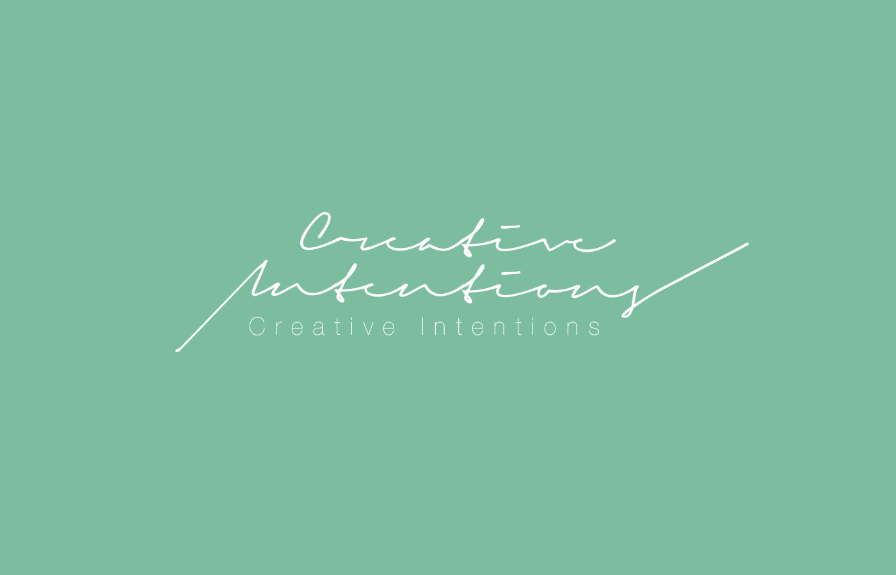

A Question is a noun which means a sentence worded or expressed so as to elicit information.

Q1. How will I be able to adapt and express myself in a team with people from different backgrounds?

Throughout the tenure of my course, I am going to be involved in teams with people from different cultures and thought processes. Things can become a bit challenging here.
However I believe all people in the course are here with the same vision i.e., to be able to understand and improve the design and thinking process.
With time we should be able to pick up relevant terminologies for our work and can express to each other through the same. Language or cultural differences should not impose a barrier here.
Q2. The timelines can be a bit overwhelming sometimes. Will I be able to cope up with the same?

As they say nothing in life comes easy. Ultimately it is about the skillset I wish to develop that I am working towards. I need to keep my motivation on the right track time and again, to be able to help myself stick to the deadlines and other such time management challenges.
There might be times things might seem to fall off place and I think that is ok sometimes. I would want myself to step back, relax and collect myself in such situations. It would make sense for me to talk to friends and teachers around to seek advice and keep a check if there's something wrong with my strategy.
Q3. What happens if I fail to draw inspiration or blank out on a project?

It is natural for such a thing to happen. I would want myself to not be anxious or overthink around the same. To escape the blocked phase, I would like to interact with new people, try to understand the problem at hand even better and figure out new sources of inspiration.
It might take some time or I might end up coming with not such a good solution but it's ok at times.
If nothing else this is also going to be a learning experience and will teach me more about myself and my coping mechanism. Such an experience will be enable me to get out of similar situation in further situations.
Q4. What happens if I am not able to pick up on new technical skills?

It might so happen that I am not able to pick up new technical skills, given the fact that I do not have much hands on experience with such new age technologies. I would want myself not to take this as a blocker but to build up on this.
The nature of my course allows me to pick up new technologies or projects and at the same time provides me with all kinds of resources to implement those as well. I just need to figure out the right help and resources to get myself out of the spot.
However I need to realise the importance of not being stuck on it and figure out if that technology does not interest me rather than spending more than required time on the same.
Q5. What if i am not able to realise one of these goals or lose sight to achieving these?

I expect myself not to get distracted or off track throughout the duration of the course. I am trying from day one and would like to continue the effort of maintaining right balance of work and participation in the other engagements.
In case such a situation arises I should remind myself of the bigger goals and targets I have set for myself in professional life and career which align and are dependent on these goals.